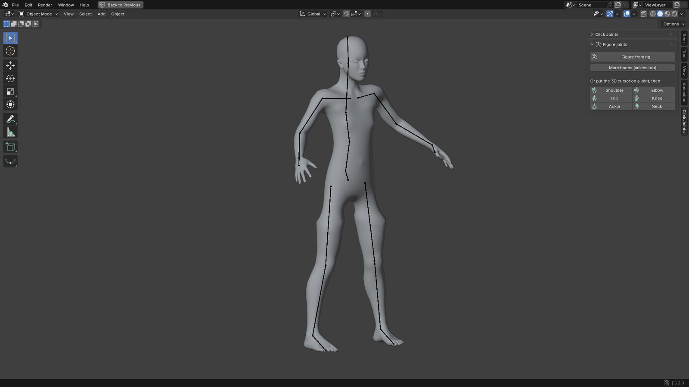
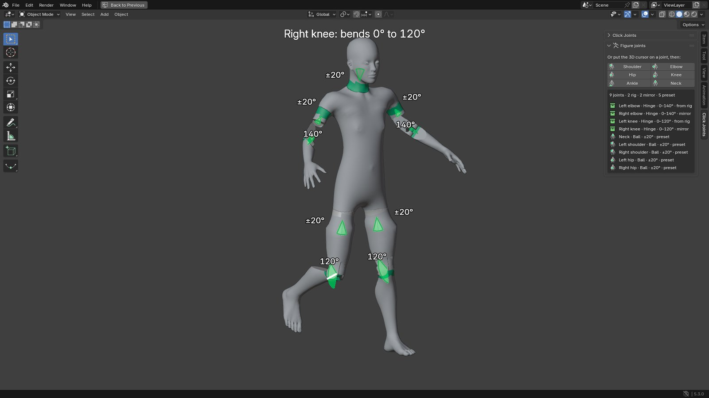
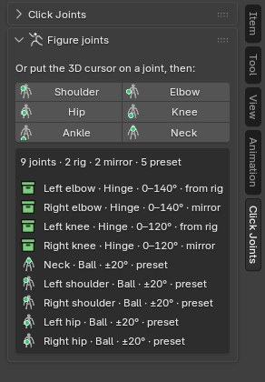

Guide · Blender for 3D printing
Articulated action figure in Blender for 3D printing: every joint from your rig
You have a character with a rig and you want it as a poseable action figure. This page shows how to cut it into printable parts with a joint at every elbow, knee, shoulder, hip and the neck, how big the gaps should be, and how to see how far each joint moves before you print.
Why it takes a day by hand
By hand you cut the figure at every joint and model a ball and socket or a hinge for each one. For a full figure that is nine joints, and every one can go wrong:
- The joint sits in the wrong place. A cut a few millimetres off the real elbow and the arm bends in a strange spot. Your rig already knows where every joint is.
- The gap is wrong somewhere. Nine joints means nine chances for one tight spot that fuses in the print.
- You do not know how far it bends. A knee that bends backwards, or an elbow that stops at 60°, shows up after the print.
The steps below use Figure from rig in Click Joints Pro, a Blender add-on made by us at Dortus. If you work by hand, the numbers in What gap to use still apply.
Step by step
- Install Click Joints Pro (Blender 4.2 or newer): Edit, Preferences, Get Extensions, then in the menu at the top right Install from Disk, and pick the zip. Then press N in the 3D viewport and open the Click Joints tab.
- Check the model. Select the mesh and click Check mesh. It has to be in millimetres and watertight; the panel offers Convert to mm or Make watertight if needed. The mesh needs its rig as an Armature modifier or as parent.
- Optional: set the bend range in the rig. Give an elbow or knee bone a Limit Rotation constraint on X, for example 0° to 120° on the knee. That angle becomes the end stop of the hinge. Some rigs only have it on the left side; the right side then gets the same range, marked mirror.
- Click Figure from rig. In the panel Figure joints click Figure from rig. It places hinges with an end stop at the elbows and knees and ball joints at the shoulders, hips and neck. More bones (ankles too) adds the ankles.
- Check the list. The panel lists every joint with its type, its range and where the range came from. Select a hinge part and drag Bend to see it move.
- Export. Under 3 Fit and export pick STL or 3MF and click Export STL (or Export 3MF). You get one file per part, in millimetres.


Where each range comes from
The list in the panel tells you for every joint where its number came from:
- from rig: the bone has a Limit Rotation (or IK limit) on X, and the hinge stops at that angle.
- mirror: only the other side had a limit, so this side got the same one.
- preset: the rig says nothing about it. A hinge then stops at 135° (elbow and knee) or 90° (ankle). A ball joint is always preset; its range is measured on the cut itself.
It reads bone names from Rigify, Mixamo, Auto-Rig Pro, Unreal, Character Creator, VRoid, Daz and plain names like upper_arm, forearm, thigh and shin.

What gap to use
- Clearance: start at 0.20 mm. Every joint of the figure keeps that gap between its parts. Between 0.1 and 0.3 mm is typical for FDM and resin; a looser printer needs more.
- Size matters. The figure in the screenshots is 220 mm tall. On a much smaller figure a limb can get too thin for a joint; then that joint is skipped instead of made weak, and the message in the status bar says which one and why (for example Skipped: Left hip (no clean spot for a hip ball on this thigh (legs touch or the thigh is short), place it by hand)).
- Every part is one closed piece. Each cut gives watertight parts, so the slicer sees them as solid.
These numbers are measured in Blender, not print tested by us yet. Print one test joint before the whole figure, every printer is different.
One joint at a time
No rig? Put the 3D cursor on a joint and click Shoulder, Elbow, Hip, Knee, Ankle or Neck in the same panel. More about each joint type: a hinge with an end stop (Pro) and a ball joint (free version).